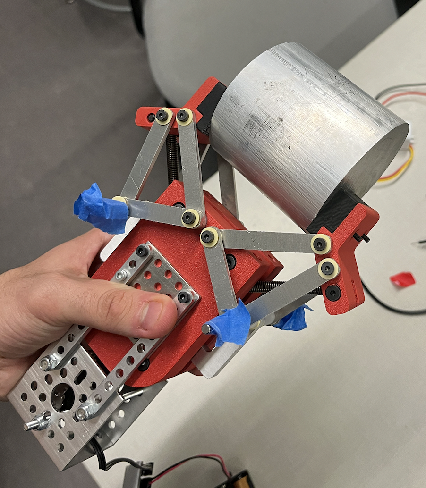
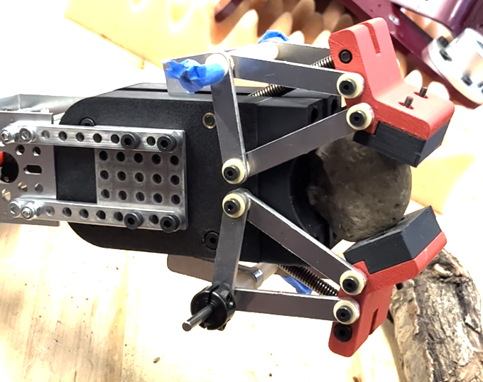
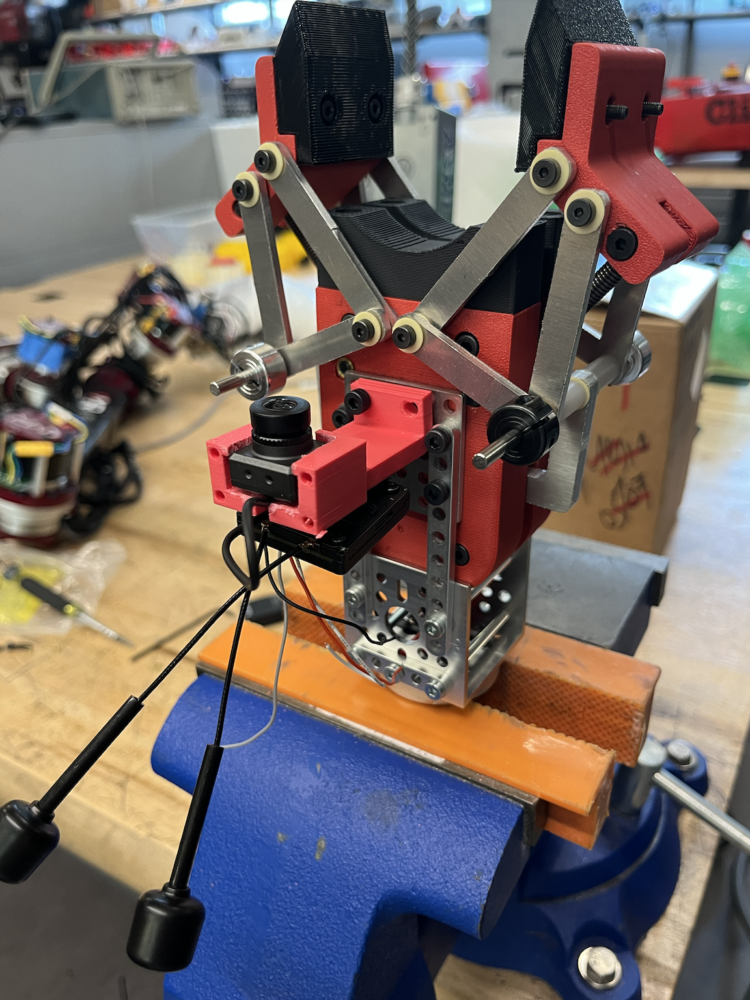
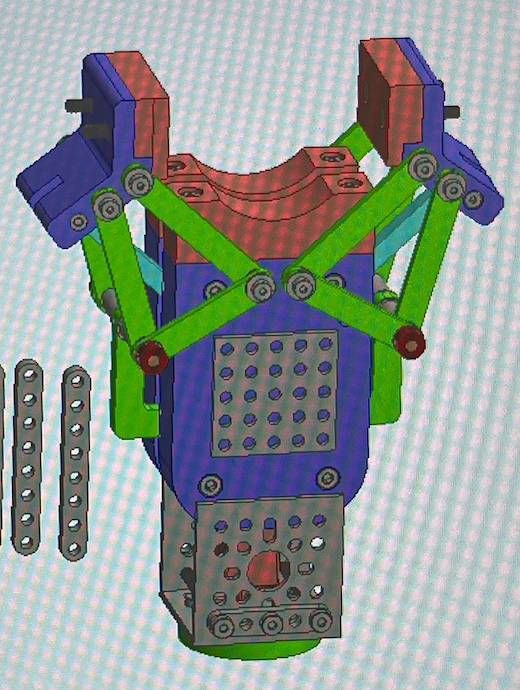

End effector mounted on arm

Test — grabbing onto a heavy metal cylinder

Grabbing a circular rock; springs extended for secure clamping

Camera side detail

CAD of design
The final prototype of the end effector utilized a linear actuator and springs to create a gripping mechanism that could bend in more, allowing the end effector to better clamp onto rocks. Additionally, the end effector employed TPU grippers to better adjust to the rugged edges of rocks. The end effector had both a camera and a laser to make it easier for the controls team to use. The self-actuating screwdriver was removed in this iteration.



